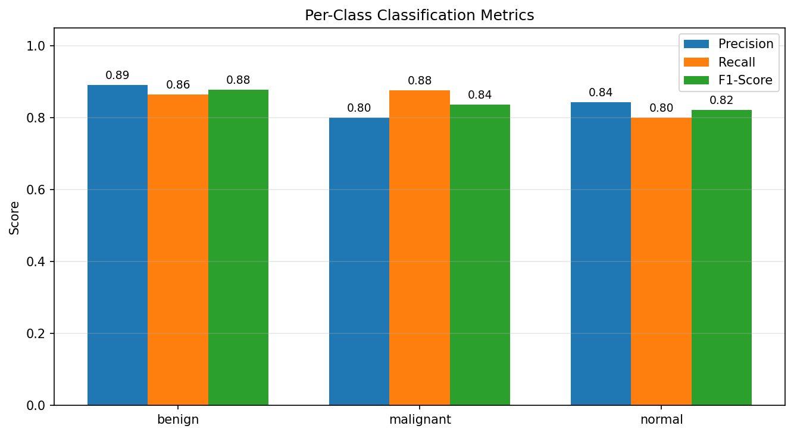
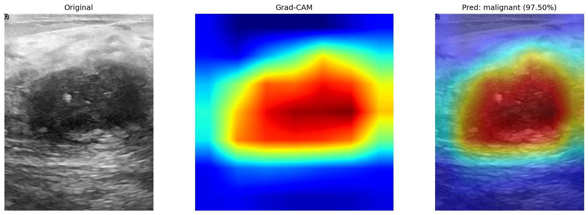
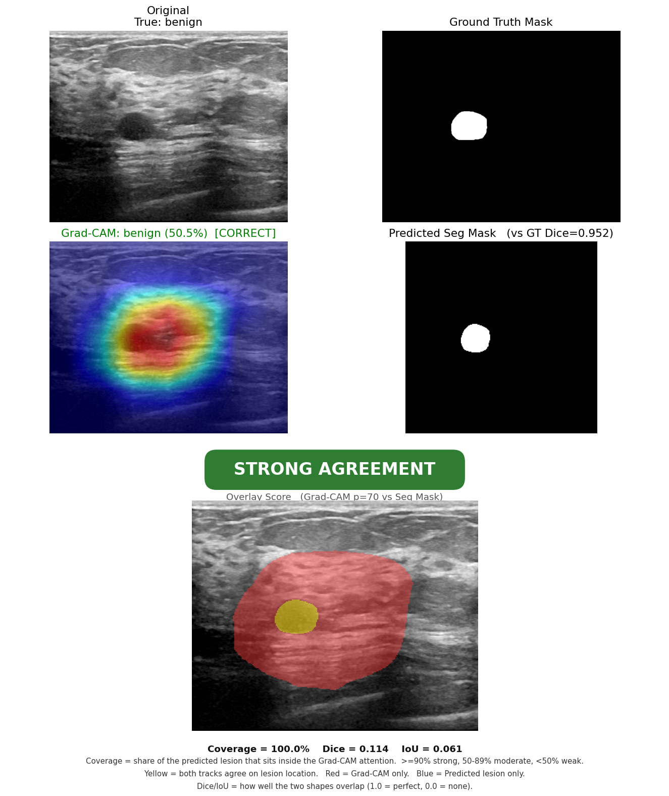
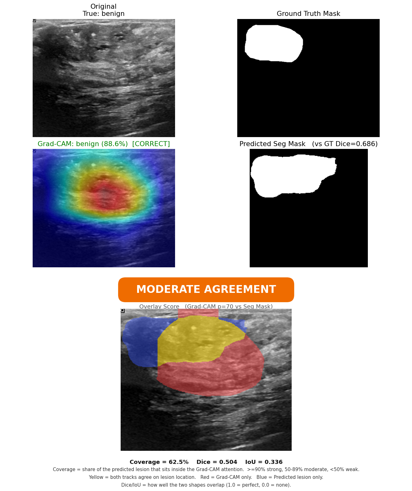

Classification
On the held-out US-Arya test split the classifier reached 86.4% accuracy and 0.86 macro-F1, clearing the project targets (≥70% accuracy, ≥0.65 F1). Optimization did not raise overall accuracy but trained more stably (best validation F1 0.850 → 0.879) and caught one more malignant case (recall 0.84 → 0.88).

Confusion matrix: right on the diagonal, wrong off it

Per-class precision / recall / F1
Per class (precision / recall / F1): benign 0.89 / 0.86 / 0.88, malignant 0.80 / 0.88 / 0.84, normal 0.84 / 0.80 / 0.82. On the harder CBIS-DDSM mammography set the classifier reached 70.8% / 0.70, meeting the minimum bar but overfitting more.
Segmentation
Switching U-Net to UNet++ with the Tversky-weighted loss was the biggest single win: test Dice rose 0.718 → 0.779 and IoU 0.603 → 0.661 (best validation Dice 0.814). This gives the comparison node a reliable outline to check the attention region against.
Grad-CAM by class
Each row is the original ultrasound, the raw heatmap, and the overlay with the predicted label and confidence. On the correctly classified benign and malignant rows the attention sits on the lesion; the misread normal row latches onto background tissue - exactly the failure mode the cross-check is designed to catch.

Benign (correct)

Malignant (correct)

Normal (misread)
Tuning the explanation
Two settings behind the comparison were checked empirically. A threshold sweep showed the best cross-track overlap when keeping the brightest 30% of the heatmap (p=70), and a target-layer ablation confirmed the deepest block gives the sharpest, most lesion-aligned heatmap.
| Heatmap threshold |
Dice |
IoU |
Grad-CAM target layer |
Dice |
IoU |
| p=30 | 0.135 | 0.083 | layer3[-1] | 0.133 | 0.083 |
| p=50 | 0.170 | 0.110 | layer4[-2] | 0.133 | 0.082 |
| p=70 | 0.208 | 0.144 | layer4[-1] (default) | 0.170 | 0.110 |
| p=90 | 0.159 | 0.104 | — | — | — |
Worked cases: Strong, Moderate, Weak
Each panel shows, left to right: the original image, the Grad-CAM overlay (correct/wrong tag), the radiologist ground-truth mask, the predicted mask with its Dice, and the thresholded attention region.

Strong outline sits inside the attention (coverage 100%)

Moderate outline mostly inside (coverage 62.5%)

Weak label correct, but the tracks disagree spatially - flagged for work-up
Score-CAM cross-check
Running the gradient-free Score-CAM produces the same kind of heatmap without using gradients. The two methods agree within one standard deviation, so the findings do not depend on the chosen method.
| Method |
Classification accuracy |
Mean Dice |
Mean IoU |
| Grad-CAM | 95.2% | 0.170 ± 0.214 | 0.110 ± 0.148 |
| Score-CAM | 85.7% | 0.161 ± 0.210 | 0.104 ± 0.146 |